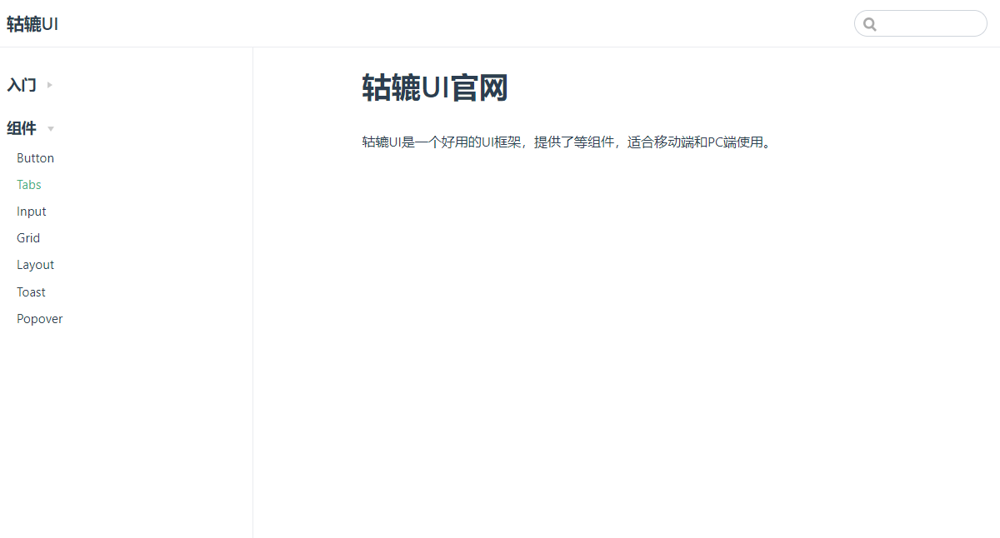
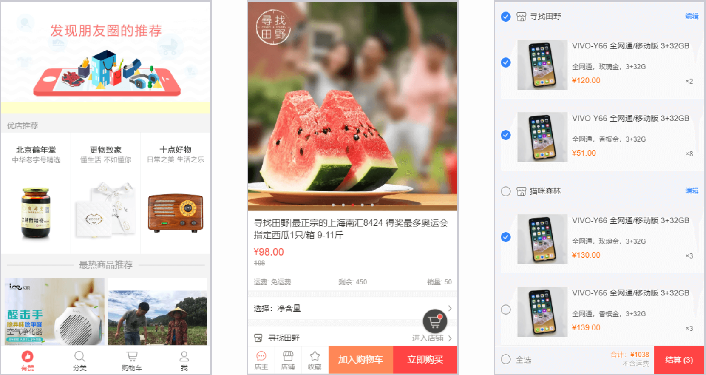

项目经历
轱辘 UI
- 项目介绍：该项目是参照 Framework7、Ant Design、Element UI、iView 等 UI 库思路，做的一个基于 Vue 的简易 UI 组件库，目前已支持按钮、输入框、网格、布局、Toast、Tabs、Popover、手风琴等组件。每个组件均经历从需求分析到 Mocha 单元测试，并用 TravisCI 实现持续集成，最终以 VuePress 为基础制作官方文档，发布于 npmjs.org。完成该项目使我对 Vue 的常用特征更加熟悉，同时提升了自己对前端工程化流程以及单元测试重要性的深刻理解，近一步开源文化。
- 技术：Vue.js/ VuePress/ ES6/ Parcel/ Npm Scripts/ Mocha/ SCSS/ TravisCI
- 项目源码：点击查看
- 浏览链接：点击查看
移动端购物商城
CNode 社区

小程序：遍历翻译

- 项目介绍：一款提供翻译功能的微信小程序，遍历有浏览所有翻译历史之意。该项目以百度翻译 API 为服务器域名提供支持，主要包含翻译首页、语言列表页和翻译历史页。项目逻辑简单，页面清新，提供了近 20 种语言选择，欢迎尝试。
- 项目源码：点击查看
- 浏览项目：微信搜索小程序——遍历翻译或扫描示例图（PDF 版本不显示）中二维码
可爱皮卡丘


专业技能
熟练 HTML、DIV + CSS 的页面布局，能根据设计图像素级完成页面制作
熟悉 HTML 5 及语义化，了解 Canvas 动画制作，掌握 CSS 3 动画、过渡效果等常用技术熟悉原生 JavaScript，会使用 ES6+ 常用规范
熟悉 Vue 常用功能，了解如生命周期、虚拟 DOM、数据响应式等概念，能够使用 Vue 全家桶开发项目
熟悉模块化、工程化开发流程，能够配置 Webpack
有移动端开发经验，会使用viewport、响应式 等技术制作适配手机设备的页面
了解AJAX、JSONP等 HTTP 相关知识，了解常见的 Web 性能优化方案
熟练使用 VsCode、WebStorm、Sass、Git 等开发工具